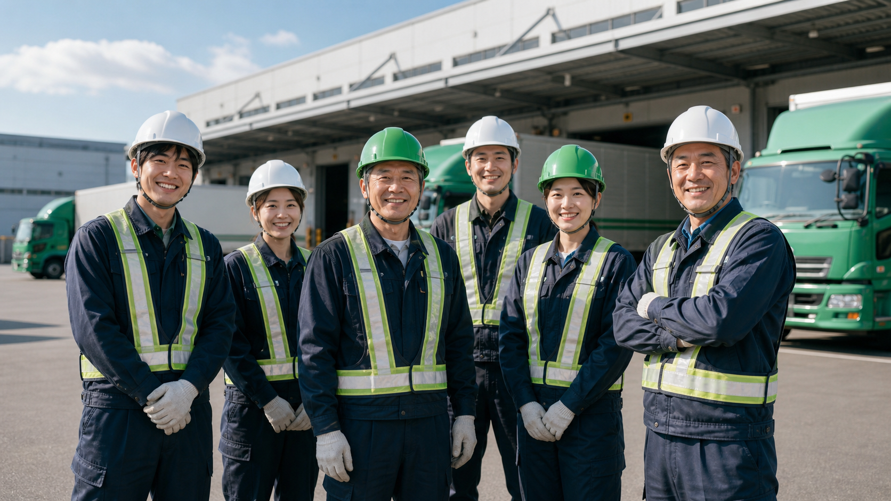
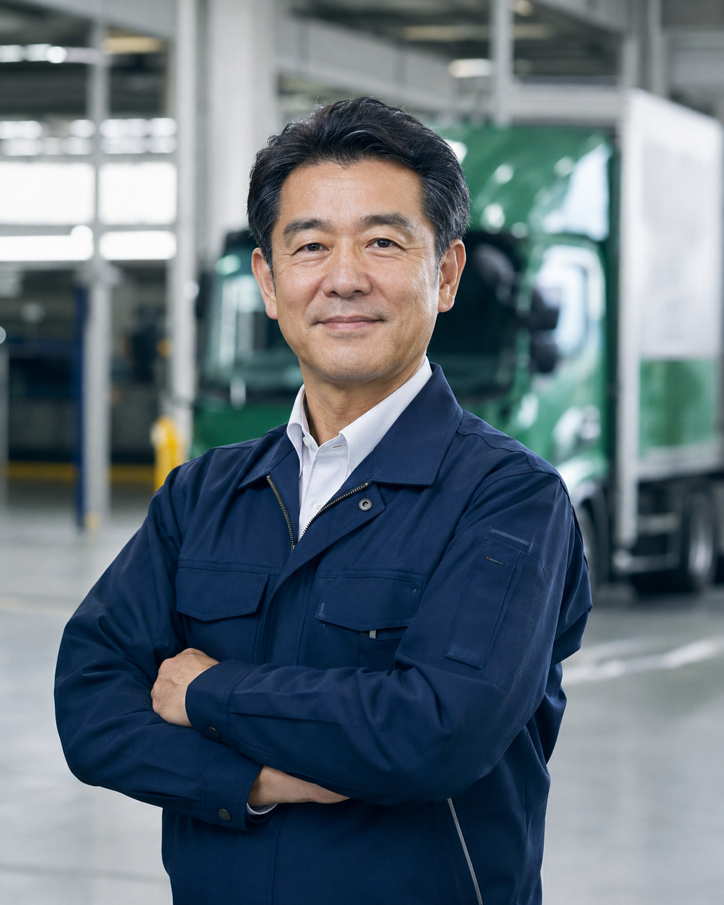
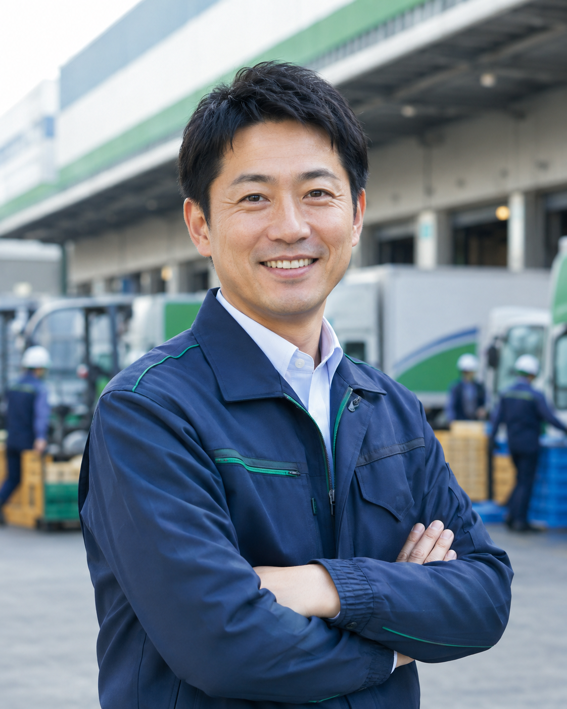

幹線・地域輸送
積載効率だけに偏らず、重量配分・荷姿・納品順まで考えた輸送計画を組み立てます。
SUIRO LOGISTICS / MOVE WITH CARE
私たちが運ぶのは、荷物だけではありません。その先で待つ人の時間と安心まで。翠路ロジスティクスは、安全・品質・人を軸にした物流を追求する架空の運送会社です。
SCENE 01 / PICKUP爪先まで、判断力。
SCENE 02 / LOADING積載は、輸送品質だ。
SCENE 03 / SECUREMENT守って届けて、売上になる。
OUR BUSINESS / FICTIONAL COMPANY
一般貨物の輸送、倉庫内荷役、壊れ物や生体ケージを想定した特殊荷役まで。運行と現場が同じ安全基準を共有し、荷物の状態を次の工程へ確実につなぐ——それが翠路の仕事です。

積載効率だけに偏らず、重量配分・荷姿・納品順まで考えた輸送計画を組み立てます。
パレット差込、低い荷姿での搬送、荷台での固定まで、工程をまたいで品質を守ります。
ガラス、精密機器、ペットケージなど、破損厳禁貨物を想定した荷扱いを徹底します。
CORPORATE PHILOSOPHY
安全な一便は、誰かの予定を守り、仕事をつなぎ、暮らしを支えます。私たちは「急ぐときほど基本へ戻る」文化を育て、誠実な判断を積み重ねます。
止まる、見る、確かめる。迷ったときに立ち止まれる組織であり続けます。
受け取った状態を守り、次の工程が安全に扱える形で引き渡します。
経験を感覚で終わらせず、言葉と研修で次の仲間へつなぎます。
過不足のない資材と積載を選び、効率と安全の両立を目指します。
WHAT YOU LEARN
速さだけではクリアできません。安全に届けて利益を残すまでが研修です。
爪高と差込深さを確認。爪突き事故を防ぎ、荷を低く保って搬送します。
最大積載量を守り、重量物を床へ。前後の偏りと高重心を整えます。
ガラスやペットケージを発泡材、コンパネ、ベルトで適切に守ります。
運賃から資材費、破損費、遅延損失を計算。多く積むだけでは利益になりません。
OUR TRAINING STANDARD
物流企業のサイトで重視される安全・品質・環境の考え方を、積み込み作業の判断へ置き換えました。
爪高、差込量、定格荷重を確認。誤操作は破損と損失として結果へ反映します。
安全荷役壊れ物やペットケージに必要な緩衝・固定を選び、荷崩れとずれを防止します。
輸送品質空間、重量、配送順を見ながら積載効率を上げ、安全売上の最大化を目指します。
効率輸送TIME LIMIT / DELIVERY PROMISE
ミッションごとの制限時間は2分30秒〜5分。0秒になっても積み込みは続けられますが、その後は5秒ごとに500円が安全売上から差し引かれます。
HOW TO PLAY
段積みは上から、前後配置は手前から。爪を穴へ75%以上差し込み、奥への突き出しに注意します。
持ち上げた荷を低い位置に保ち、出荷バースまで後退搬送します。
トラック側面図へ配置し、重量・重心・配送順と固定を整えます。
10パターンの夜間配送。通常80km/h、アクセルで最大120km/h、離せば緩やかに減速。左右で工事・障害物を回避。接触・急ブレーキによる荷傷みは−5点。パトカー追越時・追越後5秒は90km/h以上で−3点。配送目安150秒。数値はゲーム専用です。
PEOPLE OF SUIRO
役職に関係なく、危険に気づいた人の声を最優先にする。翠路の架空メンバーが、仕事への姿勢を語ります。

「迷ったら一度止める。その判断を、チームで肯定できる現場にします。」
「配車、荷役、乗務員が同じ情報を持つことが、破損ゼロへの第一歩です。」

「荷物の向こうにいる人を思い浮かべれば、固定の一本にも理由が生まれます。」
現場、乗務員、お客様の間に立ち、変更や注意事項を正確に引き継ぎます。
価格だけでなく、荷姿・設備・作業導線まで確認し、安全に実行できる提案をつくります。
掲載されている人物はすべて画像生成による架空人物であり、実在する人物とは関係ありません。
RECRUIT / CAREERS
乗務員、荷役スタッフ、配車・事務、物流営業が互いの専門性を尊重し、一本の輸送を支える——という架空の企業文化をご紹介しています。
「翠路ロジスティクス株式会社」、SUIRO LOGISTICS、掲載する事業所・役職者・従業員・沿革・コメント等はすべて架空であり、実在する企業・団体・人物とは一切関係ありません。住所・電話番号は掲載しておらず、運送依頼、採用応募、問い合わせの受付も行っていません。人物画像はAIで生成した架空人物です。
SUIRO SAFETY ACADEMY
SUIRO SAFETY ACADEMY
3段階の研修 ①倉庫：上段・手前から取り出し、左へ搬送 ②荷台：積む → 固定 → 点検 ③配送：通常80・↑アクセルで120・離して減速・↓またはスペースでブレーキ・←→で回避。スマホは画面下の操作パッドを使用。